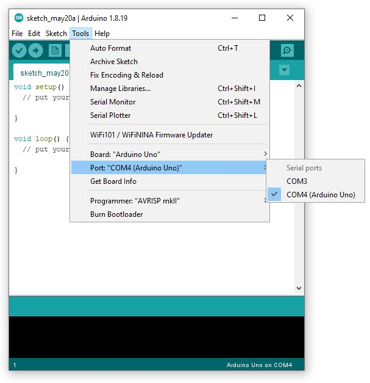
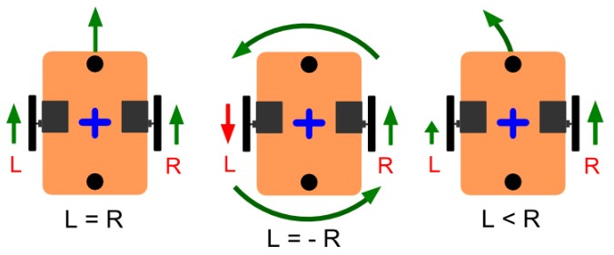
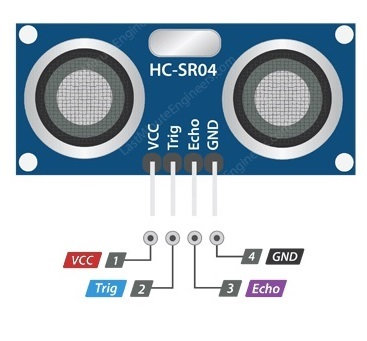
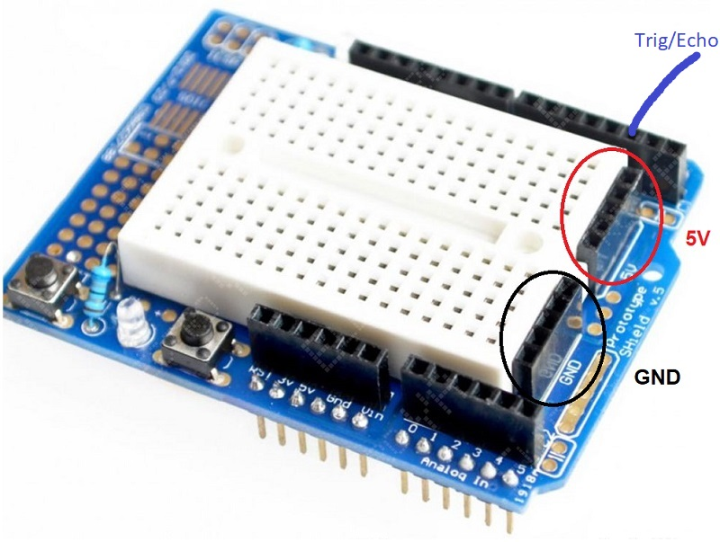
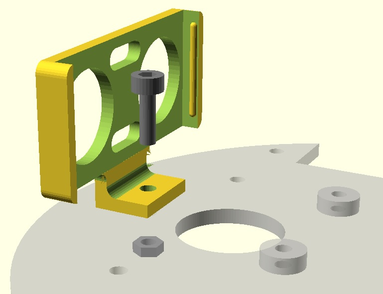
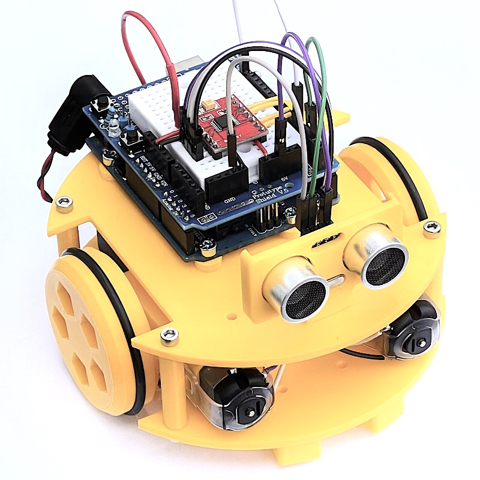
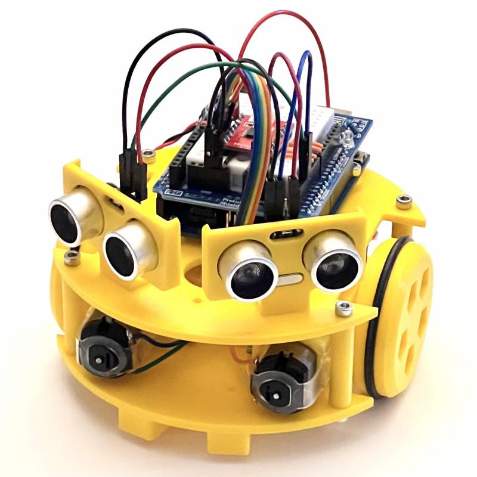
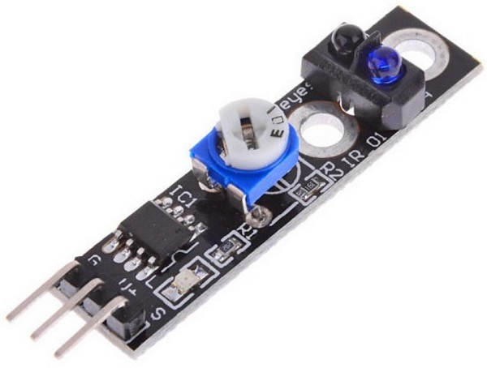
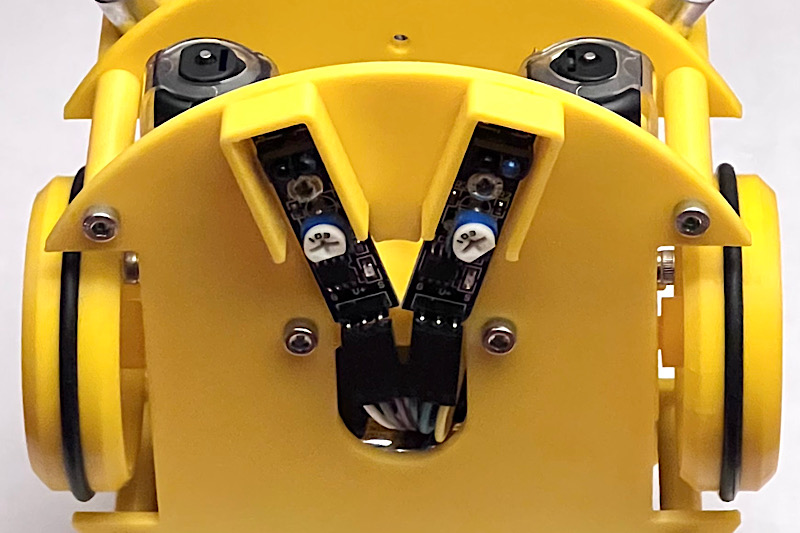

Programación de Sapoconcho
Ahora que ya tienes tu Sapoconcho montado.. ¡vamos a programarlo!
Lo primero que necesitas es Arduino IDE, el programa que te permitirá escribir el código en el robot. Una vez instalado conecta el Arduino al ordenador usando el cable USB de tu kit y abre Arduino IDE.

En el menú tools selecciona:
- Board: Arduino Uno
- Puerto: el puerto USB en el que tienes conectado el Arduino.
Programando en Arduino
Programar en Arduino es muy sencillo, tenemos dos funciones en las que escribir nuestro código:
- Setup: el robot hará lo que escribas aquí cuando se encienda.
- Loop: el robot hará esto continuamente una vez finalice el setup.
Truco
Lo que escribas después de una doble barra "//" no se ejecutará, puedes usarlo para poner anotaciones en el código.
Función de movimiento
Para decirle al robot que se mueva vamos a usar una función drive que os damos a continuación (copia y pégala al final de tu código):
// Drive permite manejar los motores
// Izquierda y derecha admite valores de -100 a 100
// Tiempo en milisegundos
void drive(int izquierda, int derecha, int tiempo)
{
//Arduino UNO y driver TB6612/DRV8833
const int AIN2 = 9; // PWMA
const int AIN1 = 8;
const int BIN1 = 7;
const int BIN2 = 6; // PWMB
pinMode(AIN1,OUTPUT);
pinMode(AIN2,OUTPUT);
pinMode(BIN1,OUTPUT);
pinMode(BIN2,OUTPUT);
izquierda=map(constrain(izquierda,-100,100),-100,100,-255,255);
derecha=map(constrain(derecha,-100,100),-100,100,-255,255);
digitalWrite(AIN1, izquierda<0);
analogWrite(AIN2, izquierda + 255 * (izquierda < 0));
digitalWrite(BIN1, derecha < 0);
analogWrite(BIN2, derecha + 255 * (derecha < 0));
delay(tiempo);
}
Esta función nos permite decirle al robot la velocidad de la rueda izquierda, rueda derecha y un tiempo. La velocidad de cada rueda admite valores de -100 a 100. El tiempo debemos indicarlo en milisegundos (1 segundo son 1000).
Ahora debemos llamar a esta función, para ello copia y pegar la siguiente linea dentro del loop de tu programa:
Para enviar el código al robot debes pulsar el botón upload .
Verás una barra de progreso y en unos pocos segundos ¡tu robot habrá recibido su primer código!
Ahora desconecta el cable USB del Sapoconcho, ponle la alimentación de las pilas y comprueba que avanza hacia delante.
¿Sapoconcho avanza en linea recta?
Probablemente no.. esto se debe a que no existen dos motores exactamente iguales en el mundo y aunque les ordenemos ir a la misma velocidad no podrán. Intenta ajustar los valores izquierda y derecha para que tu sapoconcho avance recto.
Movimientos de prueba
Habrás notado que aunque le hemos puesto que avance un segundo Sapoconcho no para. Prueba a introducir una segunda instrucción a continuación de la anterior para indicar a sapoconcho que pare:
Si le envías este programa a Sapoconcho ahora verás que camina y para continuamente, ¡Esta es la mágia de la función loop!
¿Se te ocurre como hacer que pare definitivamente?
¡Exacto! En lugar de poner el código en el loop muévelo al setup, de esta forma sólo seguirá tus instrucciones una vez.
Ahora puedes probar a jugar con las distintas opciones que nos da la función drive y encadenarlas para conseguir una secuencia de movimientos:
- Movimiento hacia adelante: izquierda y derecha con valores positivos.
- Movimiento hacia atrás: izquierda y derecha con valores negativos.
- Giro en redondo: izquierda positivo, derecha negativo o viceversa.
- Giro en avance: valor de una rueda mayor que el de la otra.
- Parar: valores de izquierda y derecha en 0.

¿Eres capaz de hacer un giro de 90 grados?
Para hacerlo deberás ajustar el tiempo que el robot está girando en redondo.
Si lo consigues, intenta hacer un giro de 180 grados.
Intenta que el robot dibuje la forma de un cuadrado.
Deberás concatenar avances y giros en redondo hacia un lado. Al estar en un bucle infinito solo necesitas dos instrucciones para conseguirlo.
Si lo consigues, prueba con otras formas geométricas.
¿Saponconcho podrá moverse como una serpiente?
Concatenando varios giros en avance puedes conseguir que Sapoconcho se mueva en eses.
Prueba a ponerle obstáculos e intenta evitarlos serpenteando.
Sensores de ultrasonidos
Los sensores del ultrasonidos permiten a Sapoconcho medir la distancia a los objetos que tiene delante.
Sensor de ultrasonidos
El sensor HC-SR04 tiene cuatro pines: alimentación (VCC), trigger, echo y masa (GND), Trigger y echo los hemos unido con una soldadura para ahorrarnos un cable, aunque tenemos que advertir que es posible que modelos de algunos fabricantes no permitan esto, y al hacerlo no funcionen.

Los sensores tienen casi siempre dos pines de alimentación y uno o más pines de datos. La protoshield tiene en un lateral dos líneas para conectar la alimentación a positivo (5V) y negativo (GND).
Cablearemos con cables Dupont hembra-macho del sensor a la protoshield.
- VCC a uno de los conectores de 5V.
- GND a uno de los de masa.
- Trig o Echo al pin digital 2 del Arduino.

El montaje del soporte a la placa superior es sencillo, con un tornillo M3x10 y una tuerca. La placa tiene tres orificios, usaremos el central para montar un único sensor o los laterales para montar dos.

Para leer la distancia que mide el sensor usaremos una nueva función, que de nuevo copiaremos y pegaremos al final de nuestro programa.
unsigned long sonar(int pin)
{
double calibracion = 0.017; // Calibración del sensor
pinMode(pin, OUTPUT);
digitalWrite(pin,LOW); // Envía un pulso ultrasónico
delayMicroseconds(5);
digitalWrite(pin, HIGH);
delayMicroseconds(10);
pinMode(pin, INPUT);
unsigned long tiempo=pulseIn(pin, HIGH); // Espera a recibir la respuesta
unsigned long distancia= int(calibracion*tiempo); // Calcula la distancia
return distancia;
}
Para usarla debemos llamarla pasándole el pin al que hemos conectado el sensor, en este caso el 2. Esta función nos devuelve un valor que guardaremos en una variable distancia.
El siguiente código permite leer el sensor y mostrar el resultado en el ordenador para poder comprobar que funciona y calibrarlo. Sapoconcho nos enviará los datos a través del cable USB.
Código
void setup()
{
Serial.begin(9600);
}
void loop()
{
unsigned long distancia = sonar(2); // invocamos a función de medir distancia
Serial.print("Distancia: "); // Enviamos los valores a la consola
Serial.print(distancia);
Serial.println(" cm");
}
unsigned long sonar(int pin)
{
double calibracion = 0.017; // Calibración del sensor
pinMode(pin, OUTPUT);
digitalWrite(pin,LOW); // Envía un pulso ultrasónico
delayMicroseconds(5);
digitalWrite(pin, HIGH);
delayMicroseconds(10);
pinMode(pin, INPUT);
unsigned long tiempo=pulseIn(pin, HIGH); // Espera a recibir la respuesta
unsigned long distancia= int(calibracion*tiempo); // Calcula la distancia
return distancia;
}
En el ordenador deberemos abrir el monitor serial que está en la barra superior en el margen derecho .
Al igual que con los motores, cada sensor es diferente y tendremos que calibrar el nuestro para que mida correctamente los centímetros. Puedes probar a ajustar la variable calibracion dentro de la función sonar para que los valores que te muestra sean más realistas.

Mantener la distancia
Para utilizar el sensor combinado con el movimiento en Sapoconcho necesitaremos utilizar la instrucción if - else. En el siguiente programa comprobamos la distancia, si el obstáculo está lejos le decimos al robot que avance, si está cerca que retroceda.
Código
void setup() {
}
void loop() {
long int distancia = sonar(2);
if (distancia<10){
drive(-75,-75,50);
}
else {
drive(75,75,50);
}
}
void drive(int izquierda, int derecha, int tiempo)
{
//Arduino UNO y driver TB6612/DRV8833
const int AIN2 = 9; // PWMA
const int AIN1 = 8;
const int BIN1 = 7;
const int BIN2 = 6; // PWMB
pinMode(AIN1,OUTPUT);
pinMode(AIN2,OUTPUT);
pinMode(BIN1,OUTPUT);
pinMode(BIN2,OUTPUT);
izquierda=map(constrain(izquierda,-100,100),-100,100,-255,255);
derecha=map(constrain(derecha,-100,100),-100,100,-255,255);
digitalWrite(AIN1, izquierda<0);
analogWrite(AIN2, izquierda + 255 * (izquierda < 0));
digitalWrite(BIN1, derecha < 0);
analogWrite(BIN2, derecha + 255 * (derecha < 0));
delay(tiempo);
}
unsigned long sonar(int pin)
{
double calibracion = 0.017; // Calibración del sensor
pinMode(pin, OUTPUT);
digitalWrite(pin,LOW); // Envía un pulso ultrasónico
delayMicroseconds(5);
digitalWrite(pin, HIGH);
delayMicroseconds(10);
pinMode(pin, INPUT);
unsigned long tiempo=pulseIn(pin, HIGH); // Espera a recibir la respuesta
unsigned long distancia= int(calibracion*tiempo); // Calcula la distancia
return distancia;
}
Esto evitará que el robot choque con una pared hacia la que va de frente, ademássi en lugar de una pared ponemos la mano, conseguiremos manejar 'a distancia' nuestro robot.
Como diversión si estamos trabajando en grupo podemos poner todos los robots en fila y encenderlos a la vez a ver qué pasa.
Evitar obstáculos
Si a nuestro robot le ponemos dos sensores de distancia podemos ver por donde está el obstáculo más cercano y girar hacia el lado contrario evitándolo.
Código
void setup() {
}
void loop() {
long int izquierda = sonar(2);
long int derecha = sonar(3);
long int distancia = min(izquierda, derecha);
if (distancia<10){
if (izquierda<derecha){
drive(75,-75,100);
}
else{
drive(-75,75,100);
}
}
else{
drive(75,75,50);
}
}
void drive(int izquierda, int derecha, int tiempo)
{
//Arduino UNO y driver TB6612/DRV8833
const int AIN2 = 9; // PWMA
const int AIN1 = 8;
const int BIN1 = 7;
const int BIN2 = 6; // PWMB
pinMode(AIN1,OUTPUT);
pinMode(AIN2,OUTPUT);
pinMode(BIN1,OUTPUT);
pinMode(BIN2,OUTPUT);
izquierda=map(constrain(izquierda,-100,100),-100,100,-255,255);
derecha=map(constrain(derecha,-100,100),-100,100,-255,255);
digitalWrite(AIN1, izquierda<0);
analogWrite(AIN2, izquierda + 255 * (izquierda < 0));
digitalWrite(BIN1, derecha < 0);
analogWrite(BIN2, derecha + 255 * (derecha < 0));
delay(tiempo);
}
unsigned long sonar(int pin)
{
double calibracion = 0.017; // Calibración del sensor
pinMode(pin, OUTPUT);
digitalWrite(pin,LOW); // Envía un pulso ultrasónico
delayMicroseconds(5);
digitalWrite(pin, HIGH);
delayMicroseconds(10);
pinMode(pin, INPUT);
unsigned long tiempo=pulseIn(pin, HIGH); // Espera a recibir la respuesta
unsigned long distancia= int(calibracion*tiempo); // Calcula la distancia
return distancia;
}

Esto también es posible hacerlo con un solo sensor, pero tendrás que parar el robot y girarlo para medir en que dirección está el terreno más despejado ¿Eres capaz de hacerlo?
Sensores de líneas
Los sensores infrarrojos de líneas, tanto con salida analógica como digital utilizan tres pines: alimentación (VCC), masa (GND) y señal. Debes revisar tu sensor, según el fabricante los sensores podrían estar en otro orden, no tiene por qué coincidir con la foto.

Utilizaremos sensores basados en reflexión TCRT5000 con regulador (importante) que se montarán en el chasis inferior y se cablean a 5v, GND y dos entradas analógicas entre A0 y A5 (con cables Dupont H-M de 20cm).

Seguir una línea
Para leer los sensores no necesitamos una función extra, Arduino puede hacerlo con su propia función analogRead(pin). El siguiente código lee los dos sensores y si uno de ellos está sobre la línea negra gira hacia el otro lado para evitarla (necesita la función drive).